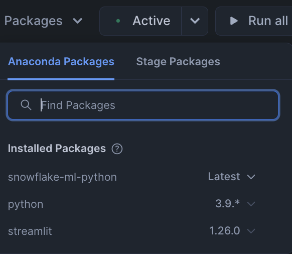

Many datasets can be easily partitioned into multiple independent subsets. For example, a dataset containing sales data for a chain of stores can be partitioned by store number. A separate model can then be trained for each partition. Training and inference operations on the partitions can be parallelized, reducing the wall-clock time for these operations. Furthermore, since individual stores likely differ somewhat in how their features affect their sales, this approach can actually lead to more accurate inference at the store level.
In this quickstart, you will use the Snowflake Model Registry to implement partitioned training and inference using custom models. When using the model, the registry partitions the dataset, fits and predicts the partitions in parallel using all the nodes and cores in your warehouse, and combines the results into a single dataset afterward.
Prerequisites
- Access to a Snowflake account with Accountadmin.
- Access to run Notebooks in Snowflake
- Foundational knowledge of Data Science workflows
What You Will Learn
- How to use Snowflake Model Registry to implement paritioned model training and inference
What You'll Need
- A Snowflake Account
What You'll Build
- A partitioned ML model
Complete the following steps to setup your account:
- Navigate to Worksheets, click "+" in the top-right corner to create a new Worksheet, and choose "SQL Worksheet".
- Paste and the following SQL in the worksheet
- Run all commands to create Snowflake objects
USE ROLE ACCOUNTADMIN;
USE DATABASE SNOWFLAKE;
-- Using ACCOUNTADMIN, create a new role for this exercise and grant to applicable users
CREATE OR REPLACE ROLE PARTITIONED_LAB_USER;
-- assign role to current user
BEGIN
LET current_user_name := CURRENT_USER();
EXECUTE IMMEDIATE 'GRANT ROLE PARTITIONED_LAB_USER TO USER ' || current_user_name;
END;
-- create our virtual warehouse
CREATE OR REPLACE WAREHOUSE PARTITIONED_WH AUTO_SUSPEND = 60;
GRANT ALL ON WAREHOUSE PARTITIONED_WH TO ROLE PARTITIONED_LAB_USER;
-- Next create a new database and schema,
CREATE OR REPLACE DATABASE PARTITIONED_DATABASE;
CREATE OR REPLACE SCHEMA PARTITIONED_SCHEMA;
GRANT OWNERSHIP ON DATABASE PARTITIONED_DATABASE TO ROLE PARTITIONED_LAB_USER COPY CURRENT GRANTS;
GRANT OWNERSHIP ON ALL SCHEMAS IN DATABASE PARTITIONED_DATABASE TO ROLE PARTITIONED_LAB_USER COPY CURRENT GRANTS;
USE ROLE PARTITIONED_LAB_USER;
CREATE OR REPLACE FILE FORMAT PARTITIONED_DATABASE.PUBLIC.CSV_FF
type = 'csv'
skip_header = 1;
CREATE OR REPLACE STAGE PARTITIONED_DATABASE.PUBLIC.S3LOAD
COMMENT = 'Quickstarts S3 Stage Connection'
url = 's3://sfquickstarts/sfguide_partitioned_ml_model/'
file_format = PARTITIONED_DATABASE.PUBLIC.CSV_FF;
CREATE OR REPLACE TABLE PARTITIONED_DATABASE.PARTITIONED_SCHEMA.RESTAURANT_TRAFFIC(
EPOCH BIGINT,
STORE_ID INT,
COLLEGE_TOWN INT,
HOURLY_TRAFFIC INT
);
COPY INTO PARTITIONED_DATABASE.PARTITIONED_SCHEMA.RESTAURANT_TRAFFIC
FROM @PARTITIONED_DATABASE.PUBLIC.S3LOAD;
- Download the notebook from this link
- Change role to PARTITIONED_LAB_USER
- Navigate to Projects > Notebooks in Snowsight
- Click Import .ipynb from the + Notebook dropdown
- Create a new notebok with the following settings
- Notebook Location: PARTITIONED_DATABASE, PARTITIONED_SCHEMA
- Run on Warehouse
- Warehouse: PARTITIONED_WH
- Click Packages in the top right, add
snowflake-ml-python

- Run cells in the notebook!

Partitioning datasets can significantly optimize the training and inference process. In this quickstart, we saw how you could partition traffic data by store, allowing for individual models to be trained on each subset. This not only speeds up operations through parallelization but also enhances model accuracy by tailoring predictions to specific store characteristics.
Now, it's your turn to implement this approach. Use the Snowflake Model Registry to perform partitioned training and inference with custom models!
What You Learned
- How to use Snowflake Model Registry to implement paritioned model training and inference